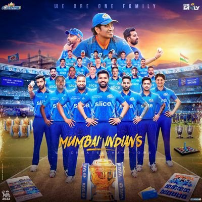
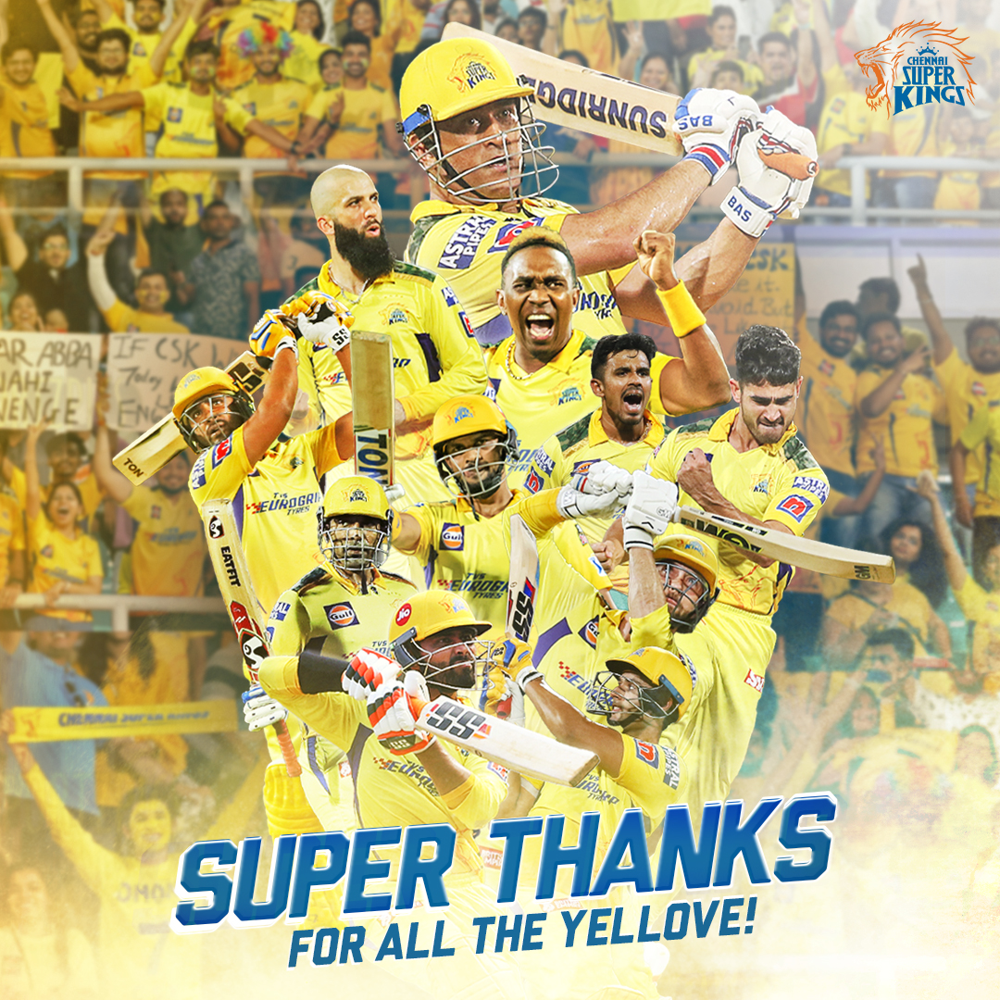
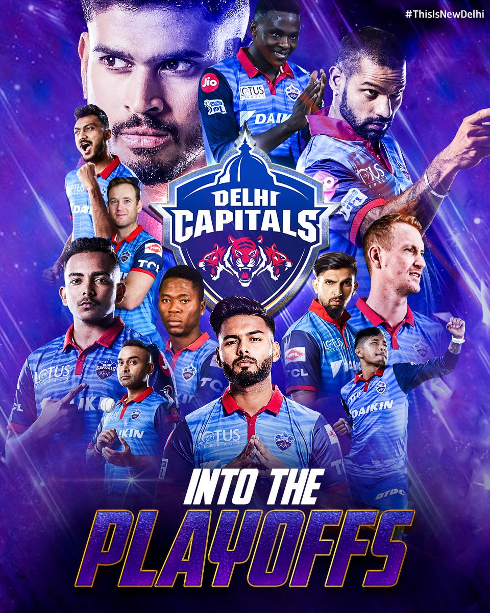
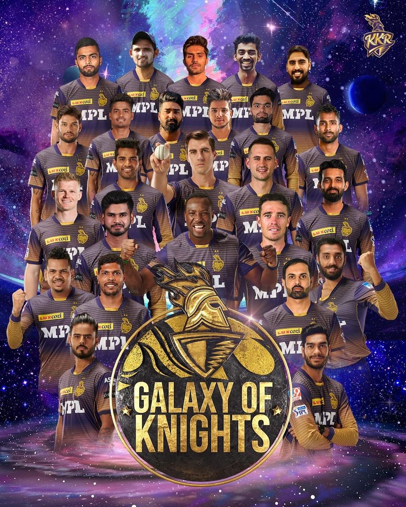
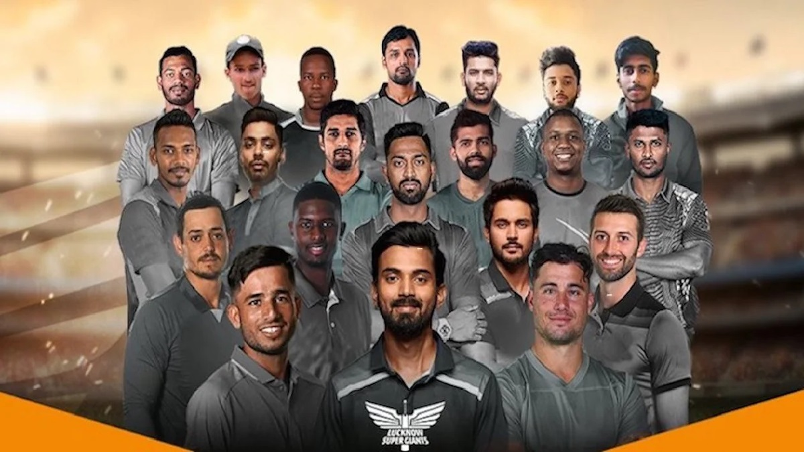
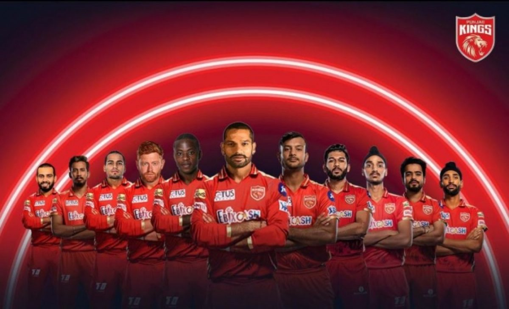
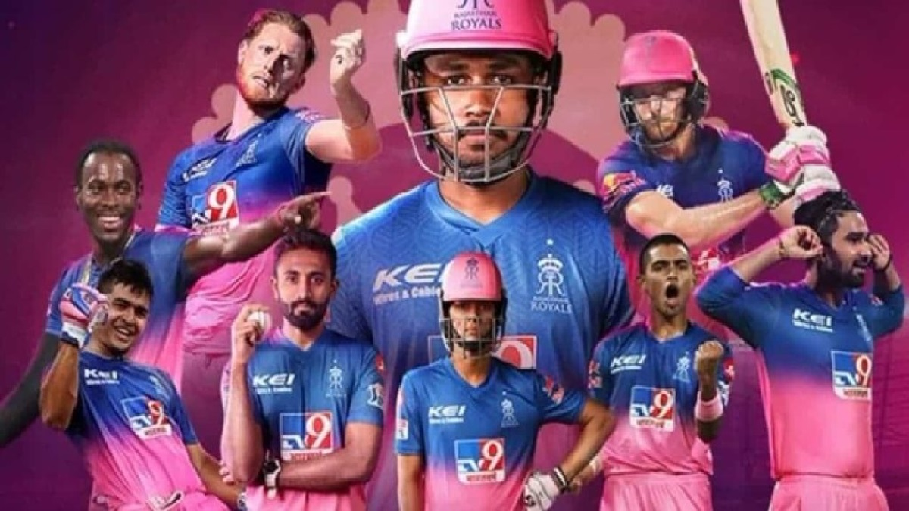
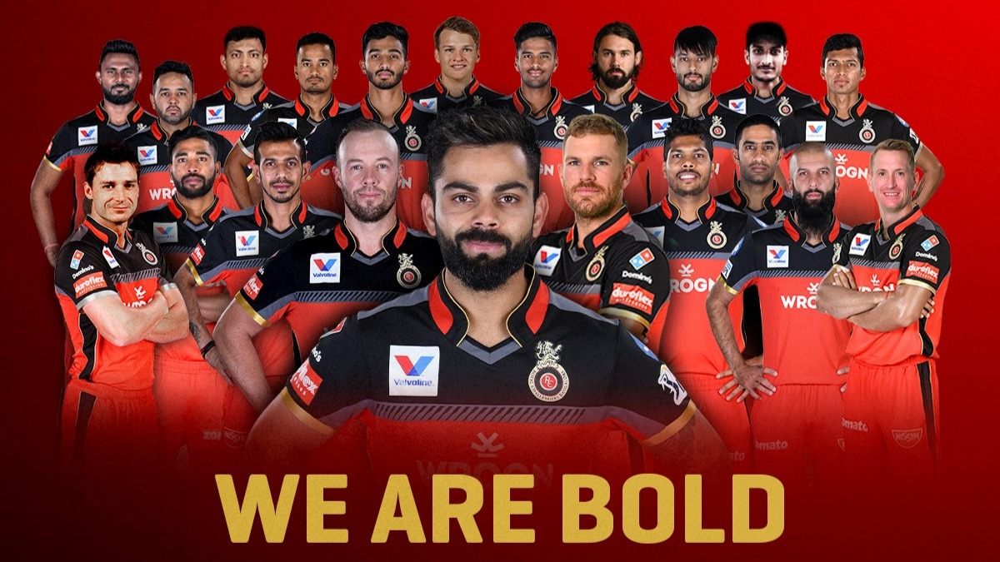
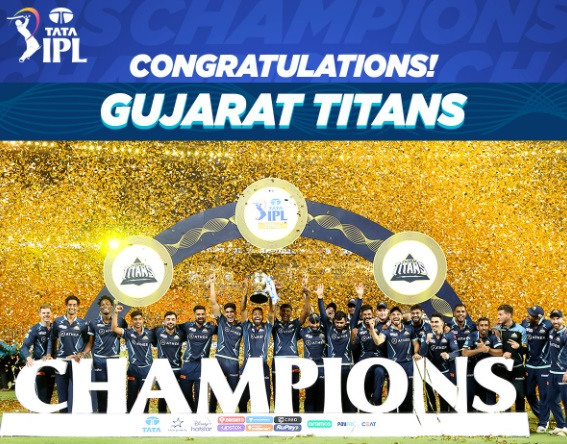

IPL 2022
IPL 2022
IPL TEAM 2022

The 2022 Indian Premier League, also known as IPL 15 or for sponsorship reasons, Tata IPL 2022, was the
fifteenth season of the Indian Premier League (IPL), a professional Twenty20 cricket league established by the
Board of Control for Cricket in India (BCCI) in 2007. The tournament was played from 26 March 2022 to 29 May
2022. The group stage of the tournament was played entirely in the state of Maharashtra, with Mumbai and Pune
hosting the matches.The full schedule of the tournament was announced on 6 March 2022.
IPL TEAM 2022
- Mumbai Indian

- Chennai Super Kings

- Delhi Capitals

- Gujarat Titans

- Kolkata Knight Riders

- Lucknow Super Giants

- Punjab Kings

- Rajasthan Royals

- Royal Challengers Bangalore

- Sun Risers Hyderabad

Win Team 2022

Gujarat Titans
- Hardik Pandya
- Rashid Khan
- Shubman Gill
- Mohammad Shami
- jason Roy
- Abhinav sadarangani
- Rahul Tewatia
- Noor Ahmad
- R Sai Kishore
- Lockie Fergusons
- Dominic Drakes
WINING TEAM CAPTION INFORMATION
- Hardik pandya (captain)
- A big hitter and a fast-bowling all-rounder, Hardik ticks all the boxes that a team desires from an
all-rounder. It was no surprise that he was fast-tracked into the Indian ODI and T20 side after a successful
run in the IPL 2015. In his debut IPL game against RCB, he hit a six off just the second ball he faced.
- Rashid khan (vice captain)
- Arguably the best leg-spinner in white ball cricket, Rashid Khan was drafted in the Gujarat Titans squad for
INR 15 crore ahead of the IPL 2022 Mega Auction. Afghanistan leggie, Rashid Khan’s story is nothing short of
a tale of hard work and passion bringing deserved glory. He grew up in a war-torn Afghanistan and rose
through the ranks by his impressive advancements first in tennis ball cricket and then at the higher levels.
Ever since his debut IPL season in 2017, Rashid has garnered all the right eyeballs owing to his mastery
with the ball. The leg-spinner turned in a few memorable match-winning efforts in SRH’s journey to the
finals the 2018 edition. He took 21 wickets and emerged as the second-highest wicket taker in that edition.
Over the years he has been one of the most sought after players in franchise T20 leagues and with a wealth
of experience, he is definitely a threat to the opposition.